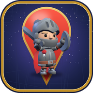

Política de privacidade
Ranvus Maps · atualizada em 22/11/2026O Ranvus Maps é um app de navegação (como o Waze) com elementos de RPG, feito por um desenvolvedor independente. Esta página explica, em português claro, quais dados o app usa, por quê, onde eles ficam e como apagá-los.
Resumo
- Não vendemos seus dados, não mostramos anúncios e não usamos rastreadores de publicidade.
- Sua localização é usada para navegar e para o jogo. Ela só sai do seu aparelho quando você liga o compartilhamento (link ou guilda).
- O login com Google é opcional e serve para o multiplayer e para o save na nuvem.
- Você pode excluir sua conta e todos os dados do servidor a qualquer momento, pelo próprio app.
Dados que usamos
| Dado | Para quê | Onde fica |
|---|---|---|
| Localização precisa (GPS), inclusive com o app em segundo plano durante a navegação | Mostrar você no mapa, calcular a rota, dar as instruções de voz e fazer o herói andar e encontrar monstros. Em segundo plano, só enquanto uma navegação está ativa, para as instruções continuarem com a tela desligada. | No seu aparelho. Só vai para o servidor se você ligar Compartilhar rota (link) ou Localização pra guilda. |
| Destinos e buscas que você digita | Encontrar endereços e calcular rotas | Enviados aos serviços de mapa listados abaixo; os favoritos (Portais) ficam no seu aparelho e no save na nuvem |
| Conta Google (nome, e-mail e foto), se você fizer login | Identificar você no multiplayer e no save na nuvem | Firebase (Google), no projeto do Ranvus Maps |
| Apelido, classe, nível, km percorridos e conquistas | Perfil público para amigos, guilda e ranking | Firebase. Visível só para jogadores logados. |
| Progresso do jogo (herói, itens, bestiário, estatísticas) | Jogar; e, com login, o save na nuvem | No seu aparelho; com login, também no Firebase, em área privada que só a sua conta lê |
| Amigos, guilda, trocas de itens | Funções multiplayer | Firebase |
| Voz (busca por voz) | Transformar a fala em texto do destino | Feita pelo reconhecimento de voz do próprio Android; o app recebe só o texto |
Compartilhamento de localização
Link (📡): gera um endereço secreto; só quem tiver o link vê sua posição e destino, até você parar ou chegar (no máximo 24 h).
Guilda (📍): você liga e desliga; só os membros da sua guilda veem. Desliga sozinho depois de 12 horas.
Serviços de terceiros
Para funcionar, o app envia coordenadas e textos de busca a serviços de mapa abertos: OpenFreeMap e OpenStreetMap (mapa), Photon/Komoot e Nominatim (busca de endereços), OSRM (rotas) e Overpass (radares e locais). O login e o banco de dados usam o Firebase, do Google. O site é hospedado no GitHub Pages. Cada serviço tem sua própria política de privacidade.
Por quanto tempo guardamos
Enquanto sua conta existir. Compartilhamentos por link expiram em até 24 h; a localização da guilda some ao desligar (ou em 12 h). Ao excluir a conta, tudo é apagado do servidor.
Excluir sua conta e seus dados
No app: abra a ficha do herói → aba Social → excluir minha conta → Excluir tudo. Isso apaga do servidor o apelido, perfil, amigos, guilda, trocas, localização e o save na nuvem, e também a conta de login. O herói salvo no seu aparelho continua (para apagá-lo, desinstale o app ou limpe os dados dele).
Sem o app: peça a exclusão pelo WhatsApp (85) 99766-2543, informando o e-mail da conta Google. Apagamos em até 7 dias e avisamos você.
Crianças
O app não é direcionado a menores de 13 anos e não coleta dados deles intencionalmente.
Seus direitos (LGPD)
Você pode pedir acesso, correção ou exclusão dos seus dados a qualquer momento pelo contato abaixo.
Contato
Igor M. — desenvolvedor do Ranvus Maps · WhatsApp (85) 99766-2543